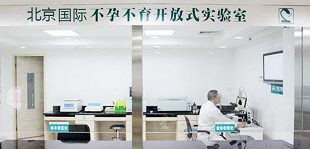
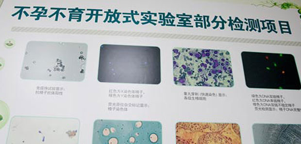
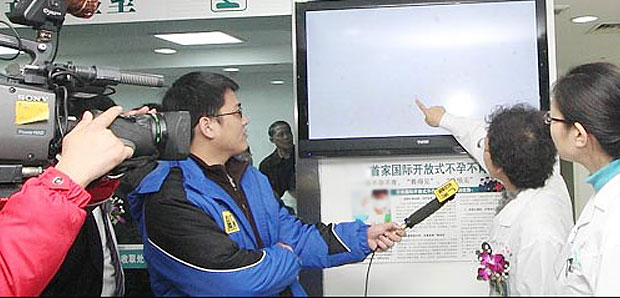
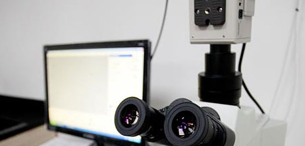
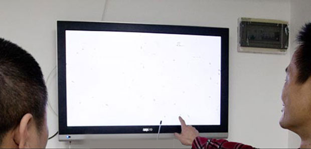
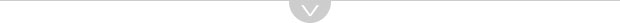
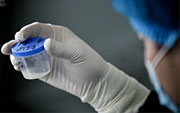
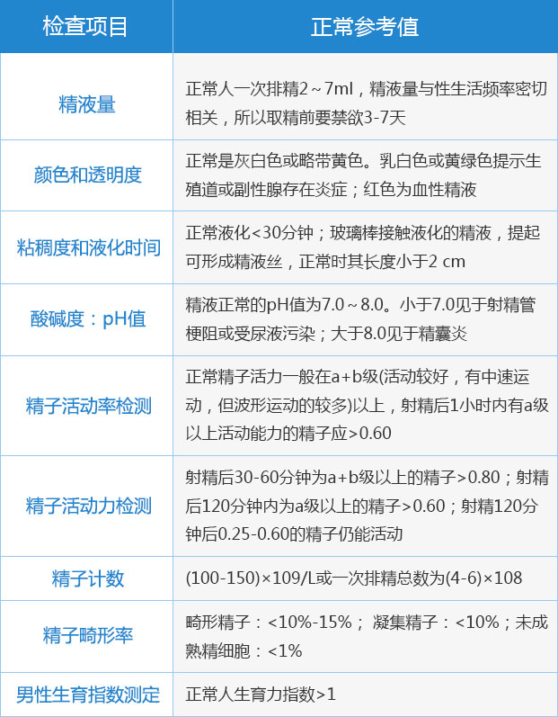

-

实验室全貌
-

实验室的检查项目
（包括对精子畸形、精子数量和质量等检查） -

不孕不育实验室引各媒体关注，专家现场讲解分析精子畸形检查
-

精子图像分析系统
（图像分析系统由一台高分辨率的显微镜和电脑连接，患者可更清晰进行观察） -

医生在和患者讲解精子情况，依据精子形态分析畸形原因
华博国际不孕不育开放式实验室四大优势

透明开放检测，可亲眼
观看精子活动
像休息室一样温馨的取
精室，私密、人性化
数字化自动分析，有最
详细的精液分析报告
颁发精子身份证，拥有
精子等级证书
精子精液异常检测三步骤
① 取精液
② 数字化分析
③ 专业报告

需禁欲3-7天，为确保结果准确，建议来院取精而不是在家取精。
精子精液异常检测项目
精子形态分析
精液量、颜色和透明度、粘稠度和液化、酸碱度及pH值。

精子质量分析
精子存活率、精子活动力、精子计数、抗精子抗体(AsAb)测定。
生精细胞分析
对生精细胞数量、比例进行分析，确定患者睾丸生精发育停止在哪一阶段；对生精细胞凋亡形态观察找出导致生精障碍的原因。
精子精液分析正常参考值
